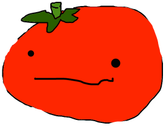

Nix v. Hedden
The Tomato Case.


 Tomato Fact #1!
Tomato Fact #1!
Tomatoes are the fruit of the tomato plant. They originated in the South American Andes around the area of modern day Peru and was first used as a food by the Aztec's in Southern Mexico.
Nix v. Hedden, or as I like to call it, the tomato case was decided on May 10, 1893. On March 3rd, 1883 a tariff was passed that made it so you had to pay taxes on imported vegetables but not fruits and so Nix tried to recover some of the money by saying that a tomato is a fruit.
Nix and Hedden fought agaisnt each other by using dictionaries for definitions of what a fruit or vegetable is. In the end the court ruled that even though a tomato is a fruit, it is considered a vegetable in trade and commerce due to how tomatoes are commonly used in main dishes and not in sweet things like desserts... usually...
Sources
Tomato Recipes A